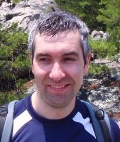

Luis Rademacher
|
I am an Assistant Professor at the School of Computer Science and Engineering at The Ohio State University.
I am a member of the Theory and algorithms group. I am a member of the core committee of The STEAM Factory. I received the NSF Early CAREER award in March 2014 for the proposal "CAREER: Transforming data analysis via new algorithms for feature extraction". |
 |
Contact
Office:
DL 495
2015 Neil Avenue
Columbus, Ohio 43210
Phone: (614) 292-3083
E-mail :
lrademac [at] cse [dot] ohio-state [dot] edu